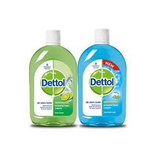
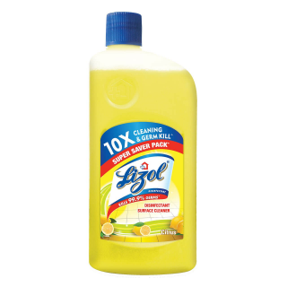

Good hygiene is an important barrier to many infectious diseases, including the faecal–oral diseases, and it promotes better health and well-being. To achieve the greatest health benefits, improvements in hygiene should be made concurrently with improvements in the water supply and sanitation, and be integrated with other interventions, such as improving nutrition and increasing incomes. The next sections discuss how to improve personal and community hygiene practices that help to prevent the spread of faecal–oral diseases. Good personal hygiene habits include:
- washing the body often. If possible, everybody should have a shower or a bath every day. However, there may be times when this is not possible, for example, when people are out camping or there is a shortage of water
- If this happens, a swim or a wash all over the body with a wet sponge or cloth will do
- cleaning the teeth at least once a day. Brushing the teeth after each meal is the best way of making sure that gum disease and tooth decay are avoided. It is very important to clean teeth after breakfast and immediately before going to bed
- washing the hair with soap or shampoo at least once a week
- washing hands with soap after going to the toilet
- washing hands with soap before preparing and/or eating food. During normal daily activities, such as working and playing, disease causing germs may get onto the hands and under the nails. If the germs are not washed off before preparing food or eating, they may get onto the food
- changing into clean clothes. Dirty clothes should be washed with laundry soap before wearing them again
- hanging clothes in the sun to dry. The sun's rays will kill some disease-causing germs and parasites
- turning away from other people and covering the nose and mouth with a tissue or the hand when coughing or sneezing. If this is not done, droplets of liquid containing germs from the nose and mouth will be spread in the air and other people can breathe them in, or the droplets can get onto food